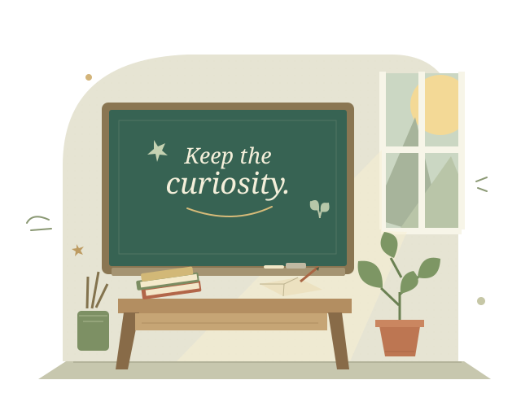

A LITTLE SUPPORT. A LOT OF POSSIBILITY.
Every lesson
deserves a chance.
Tech has its moments. So do you.
Find a safe next step, keep the learning going,
and leave the repair to the right hands.
LESS PANIC. MORE POSSIBILITY.

A small hiccup.
Not the end of the lesson.
Your classroom. Your browser. Cases stay on this device. No automatic sync or backup; clearing browser data can remove them.
LOCAL-FIRST
LET'S TAKE IT ONE STEP AT A TIME
What is getting in the way?
Three common hiccups.
One calmer place to start.
A LITTLE LESS TO KEEP IN YOUR HEAD
Your classroom, in focus.
0 open0 resolved
A PLAN B THAT STILL FEELS LIKE A PLAN
Less fixing.
More teaching.
You bring the care. We help with the next step.
- 01
Tell us what happened.
One short report. One case kept separate.
- 02
Take a safe next step.
Fixed, non-invasive checks. Stop and ask IT when needed.
- 03
Keep the curiosity going.
A device-free activity and a clear, printable handoff.